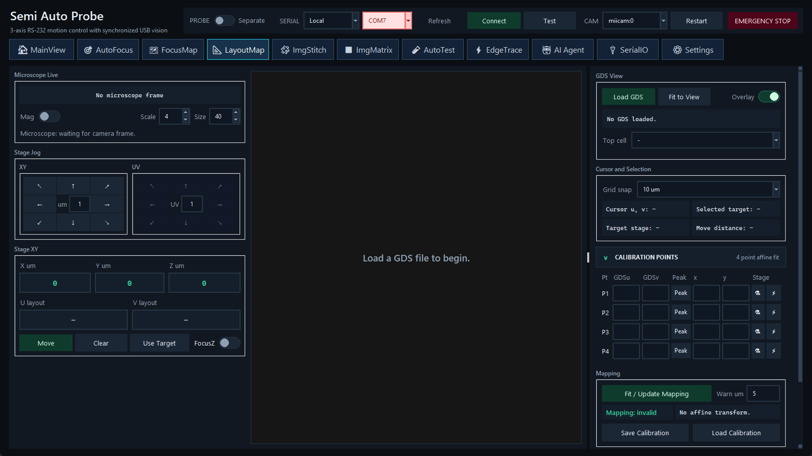

名称说明。界面页签显示 LayoutMap；配置文件、代码和部分历史文档使用 LayoutBond。两者指同一功能。
页面结构
左侧显示 microscope、Stage XY 与 Layout UV、八向 jog 和坐标操作；中央为 GDS 画布；右侧依次提供 GDS View、Cursor and Selection、Calibration Points、Mapping 与 Move to Selected Target。
载入与查看 GDS
- 单击 Load GDS 选择文件，再选择 top cell 和需要显示/拾取的 layer。
- 用滚轮缩放、左拖平移、单击选择目标；右拖框选缩放，右双击恢复 Fit View。
- 查看 Cursor/Selection 的 U/V 与目标信息。界面中的 Peak 用于记录相应版图指示点。
- 输入 FOV width/height 与 rotation，必要时从 Settings 完成像素和 FOV rotation 标定。
建立仿射映射
- 在 GDS 中选择第一个已知特征，记录其 U/V；把显微镜中心移动到同一物理特征并记录 Stage X/Y。
- 对 P1、P2、P3、P4 重复。当前实现要求四个点全部完整；点集必须能建立非退化的二维仿射变换。
- 单击 Fit，检查各点 residual 与 RMS error。结果必须低于现场允许误差，且在整个目标区域抽查。
- 单击 Save Calibration。自动上下文文件为
last_layoutbond_mapping.json；启动参数 --restore-last 会尝试恢复。
映射有效性。更换 GDS、top cell、样品方向、夹具、载台零点、相机姿态或光学倍率后，旧映射可能不再有效。载入 mapping 时必须能找到原始 GDS，并重新检查基准点。
移动到版图目标
选择 GDS 目标后使用 Use Target 或 Move to Selected Target。若已有 FocusMap，可使用 FocusZ 计算目标 Z。Shift+左双击也可触发 XY 移动；该手势会真实运动，使用前确认 Probe Separate、目标在安全范围、映射残差合格。
Overlay 与复用
Overlay 把 FOV 和已选路径叠加在 GDS/图像上。ImgMatrix、AutoTest、EdgeTrace、AI Agent 的 GDS move 与 overlay 都使用此页当前 mapper；它们不会自行重新标定。
相关主题：FocusMap · ImgMatrix · AutoTest